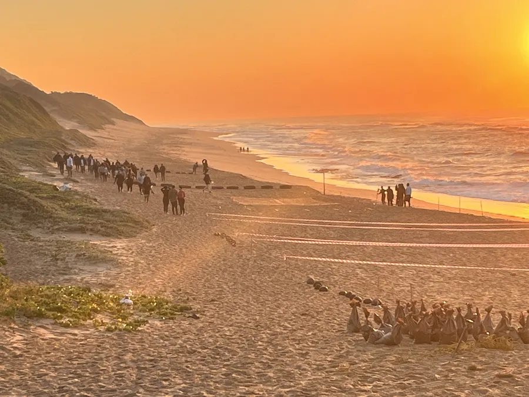

Victoria Street Market brings spice stalls, craft traders and a long shopping history into one Durban city-centre visit. Bring questions, not a fixed list of souvenirs.

Find the right market
Victoria Street Market is in Durban Central at 151/155 Bertha Mkhize Street. The operator lists more than 200 traders selling Indian spices, African artwork, clothing, seafood and other goods. This is an urban shopping market, not the Saturday farm market at Shongweni.
Save the street address before leaving the Bluff. There are other markets around central Durban, so check the venue name and address together on your map.
Ask before buying a spice blend
Start with the dish you want to cook. Ask the trader what the blend is for, how hot it is and how much to use. A label that only says ‘curry powder’ may not tell you enough.
Ask whether the mix contains salt, then check ingredients if you avoid certain foods. We'd buy a small amount of one blend we understand rather than several packs we may never use.
Choose crafts with care
Traders also sell carved work, brass items, jewellery and clothing. Pick one item type to compare. Look at the material, finish and size, then ask how it was made.
If something is described as handmade or locally made, ask where its maker works. Don't assume every product comes from Durban. For gifts, ask how best to pack them for travel.
Check trading hours
The market homepage lists Monday to Friday 08:00–17:00, Saturday 08:00–16:00 and Sunday 09:00–15:00. Its history page shows longer hours. Use the homepage as a guide, not a guarantee.
Call 031 306 4021 if your visit depends on late opening or a public holiday. Don't leave your only chance to shop until just before closing.
Buying food? Think about the return
The operator lists a fish and meat market among its sections. This offers a different experience from shopping for crafts and gifts.
Only buy food that needs chilling if you can keep it at a safe temperature. If you'll be out for hours before returning to the Bluff, choose goods that travel well instead.
Notice the story behind the stalls
The operator traces the market's history through Indian merchants and market gardeners in Natal. Its history page records a major fire in 1973 and the rebuilt market's opening in 1990. Durban Tourism calls it the city's oldest market.
That history makes this more than a place for souvenirs. Read the market's history page before you go, then ask traders what has changed over the years.
Plan the trip from 4Shore
The market advertises parking at Fish Market Lane with a short free period, but terms can change. Check the signs on arrival. If using a ride service, agree on a collection point before browsing.
Our Durban transport guide covers travel choices. For a very different outing, read our Shongweni Market guide, which focuses on a Saturday farmers and craft market.
FAQ: Victoria Street Market
Where is Victoria Street Market?
At 151/155 Bertha Mkhize Street in Durban Central. Use the full street address when mapping your trip.
What are its opening hours?
The homepage lists weekdays 08:00–17:00, Saturday 08:00–16:00 and Sunday 09:00–15:00. Call ahead as another market page gives different times.
What can I buy?
Traders sell spices, African crafts, clothing, bags, jewellery and food. Stock varies.
Is it the same as Shongweni Market?
No. Victoria Street Market is in Durban Central; Shongweni's farmers and craft market is a separate Saturday destination.
Ask about your 4Shore stay
Winston is the owner and host of 4Shore Guesthouse and the person guests can contact directly about rooms, rates, availability and practical questions. You can ask him about a stay at 28 Foreshore Drive, Ocean View, Bluff, Durban, KwaZulu-Natal, 4052. Call +27 83 254 4825 or email 4shoredurban@gmail.com.